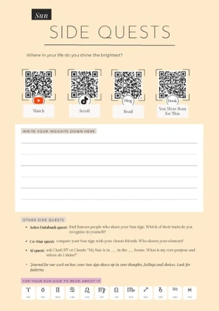
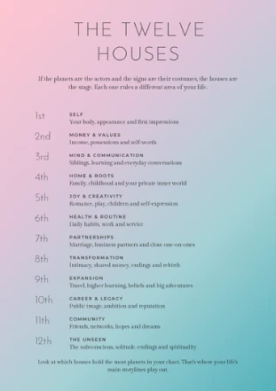
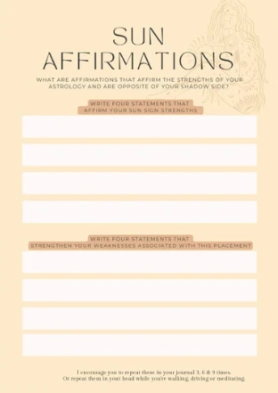
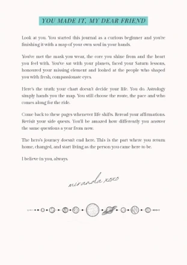

The Big Three
Sun, Moon and Rising: the core you shine from, the heart you feel with, and the mask you wear.
Navigating the Stars of Self-Exploration
A guided journal that walks you through your whole birth chart, one placement at a time: your Rising, your Moon, every planet, all twelve houses. Warm, honest and written like a letter from a big sister who's been where you are.
This journal is the bridge between knowing your sign and reading your chart.
Sun, Moon and Rising: the core you shine from, the heart you feel with, and the mask you wear.
Mercury, Venus, Mars, Jupiter, Saturn, Neptune and the rest. What each one runs in your life, and how its sign shapes it.
If the planets are the actors and the signs are their costumes, the houses are the stage. See where your main storylines play out.
Your North and South Node: the comfort zone you're growing out of, and the direction you're growing toward.
Scan a code and you're watching a video, scrolling a TikTok or reading the deep dive. Plus journaling quests and AI prompts to take each chapter further.
Statements that own your strengths, and statements that gently work on your shadow side.
Trine, sextile, retrograde, stellium. Finally explained like a friend would explain them.
Prompts and writing space right on the page, so your insights live next to the lessons.




Start with your Rising sign: the first impression you make and the lens you see life through.
Your Sun and Moon. What you shine from, what you feel with, and why they don't always agree.
Saturn, the Nodes, your missing element. The chapters that ask the most of you, and give the most back.
Return to everyday life with a map of your own soul, and start living as the person you came here to be.
Here's the truth: your chart doesn't decide your life. You do. Astrology simply hands you the map. You still choose the route, the pace and who comes along for the ride.
Come back to these pages whenever life shifts. You'll be amazed how differently you answer the same questions a year from now.
I believe in you, always.
miranda xoxo
Yes. Pop in your email, download it, keep it forever. You'll also get the occasional email about reading your chart, and you can unsubscribe with one click.
For your Rising sign and your houses, yes, because they depend on the time you were born. A birth certificate or a parent's memory works. No time? You can still work through your Sun and most of your planets.
Tap a zodiac sign to jump to it, tap or scan the side-quest codes to watch and read more, and open it on any phone, tablet or laptop.
It was written for you. If you know your Sun sign, you know enough to start. Everything else is explained as you go, and the glossary has your back.
Get the free 91-page journal and start with your Rising sign tonight.
Download it now and start with your Rising sign. A copy is on its way to your inbox too.
Download the PDFPreview mode: nothing was saved. On the live site, this step adds the reader to GoHighLevel and shows the PDF download button.
Circle of Stars is a private atlas of the people in your life: their charts, Human Design and strengths, side by side with yours, with an AI guide that shows its work. Free to start.
Create your free circle